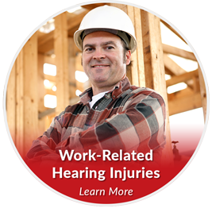

Conditions › Hearing Injuries
Everyday sounds louder than 85 decibels — industrial noise, gunfire, loud music — can cause permanent hearing loss. The good news: noise-induced hearing injury is almost entirely preventable.

According to the National Institute for Occupational Safety and Health (NIOSH), roughly 22 million U.S. workers are exposed to dangerous noise levels on the job. Once noise damages the inner ear, that hearing loss is permanent — which is exactly why prevention matters so much.
Hearing Loss Solutions is your source for properly fitted industrial hearing protection, baseline and periodic hearing tests, and education to keep your hearing intact at work.
Explore custom hearing protection ›An effective workplace hearing-conservation program combines the right protection with ongoing monitoring and education.
Properly fitted, occupation-specific protection that actually gets worn — the single most important factor in preventing noise injury.
Baseline and follow-up audiograms that catch changes early, before a small shift becomes a permanent loss.
Training so your team understands the risk and uses protection correctly — plus accurate record-keeping, evaluations, and audits.
Whether you are an individual worker or managing a team, we can fit the right protection and set up the testing that keeps hearing intact. Call 818-989-9001 or book a consultation.
Schedule a Consultation